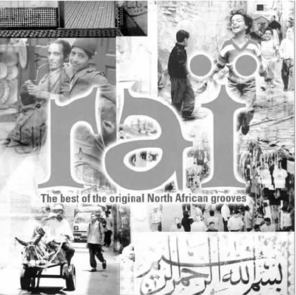
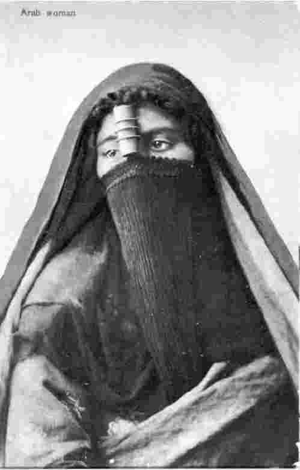
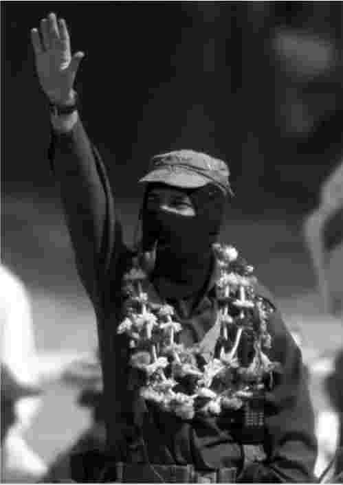
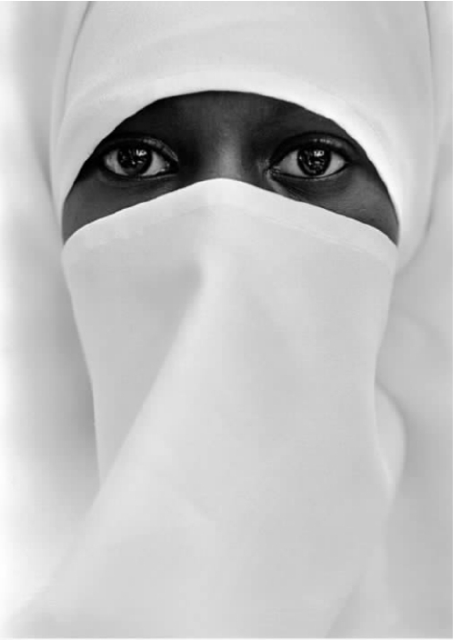

本书的大部分是在充满韵律和活力的阿尔及利亚籁乐的激励之下而写成的，同时在我写作的过程中，也不时地被这种音乐所打断。本书最理想的读法是，伴随着《查不拉斯》、《格温德兹妈妈》或者《瓦莱奇》的粗犷而强烈的打击乐旋律，一边听着“切伯”哈立德、凯克哈·雷米提和海姆的歌声一边阅读。阿尔及利亚的成年男人、女人和孩子亲历了令人震惊的阿尔及利亚独立战争，饱受了战争的煎熬。在他们奋力捍卫国家主权的过程中，法国人屠杀了一百五十万阿尔及利亚人。法国在19世纪用帝国主义的军事手段控制了阿尔及利亚，占领了这一方热土，但生活在这里的人永远不会屈服。20世纪70年代在阿尔及利亚，籁乐的出现特别令人振奋。籁乐常被描述为原始的、粗犷的和粗陋的，同时它也是骄傲的、坚定自信的和充满激情的。歌手们带着一种难以想象的愤怒让自己沉浸在节奏之中，同时这种愤怒也给籁乐增添了独特的活力和激情。
凯克哈·雷米提，2000年
籁乐始于1962年阿尔及利亚独立战争后第一代人口的爆炸性增长时期，形成于20世纪70年代后期。这时那一代的歌手们开始创作他们自己的具有动感形式的籁乐，比如萨赫罗伊、法德拉和“切伯”哈立德等。这种音乐接近于西方的摇滚乐，受到自我表达的雷盖音乐 [2] 和美洲黑人蓝调音乐的影响。籁乐的出现也与阿尔及利亚人整体向城市移居有关系，在这层意义上标志着一种融合的音乐形式的出现，这种形式记录着现代经济发展的需要。但这种音乐的产生不仅仅是一个融合、综合或互相混合的过程，人和文化的流动不可能像资本那样顺畅无阻和一成不变。事实上，籁乐产生的社会背景根本就不是单一的，而是涵盖了产生它和消费它的阿尔及利亚社会各个层面的竞争关系。在某种程度上，籁乐也可以说是一个考虑复杂文化关系和现代力量的主要的隐喻。
首先，籁乐不能轻易地用普通的词汇描述清楚。它是流动着的、变化着的，它一直在改变着自己的功能、地点、乐器和听众。籁乐作品经常是随意的，为了适应具体的需要它可以轻易地改变自已。籁乐的即兴特点则意味着它永远不会是固定的，它总是灵活多变的，可以把新的音乐因素融入进来。在一定程度上可以说，籁乐是“马尔訇”——一种阿拉伯马格里布地区 [3] 的传统音乐的现代化的版本（不过也有人说，在这一过程中不可避免地存在某种堕落的因素）。“马尔訇”是一种由当地有学识、有教养的宗教人士（当地人称为“教长”）吟唱诗歌的传统表演形式，演唱者总是享有很高的艺术地位。然而，在许多方面，籁乐更多源于更具超前意识和震撼力的女歌手的低俗歌曲。阿尔及利亚独立以前，这些女歌手会迎合公共酒吧和妓院这样的男性场所，她们会在这些地方演唱，同时也会在婚礼、宴会甚至宗教节日里表演。被授予“籁乐皇后”头衔的了不起的凯克哈·雷米提也是以这样的歌手身份开始其音乐生涯的，并在精神上也永远保持着这种身份。其他的一些籁乐女歌手开始以演唱宗教歌曲的女诗人的身份公开亮相。她们在专门为女性举行的聚会——比如割礼或婚前的刺青仪式上歌唱，既唱宗教歌曲也唱通俗歌曲。
作为一种音乐形式，籁乐最早起源于阿尔及利亚西部的世界性港口城市瓦赫兰（奥兰）独立之后。籁乐最初发展非常迅速，尤其从20世纪70年代中期开始，年轻的“切伯”（像凯克·梅弗塔、凯克·杰鲁勒·伦卡维这样的男歌手）或“恰波”（女歌手）在歌舞表演会或婚庆上演唱，并创作出了反映当时政治和文化形势的激进而又忠实的新歌。“切伯”和“恰波”这样的称呼是观众给他们的，或者他们也这样称呼自己。这也把他们与传统的歌手区别开来，并暗示他们的观众都是年轻人，他们的社会和艺术地位比较低，但也表明了他们创新的现代音乐风格。从音乐的角度来看，籁乐的部分内容来自贝都因的教长演唱的歌曲——传统的贝都因人的传统，部分来自更现代的瓦拉尼音乐。瓦拉尼音乐在20世纪30年代已经在城市中发展起来，它由北非的古典城市音乐“马尔訇”和“安答卢斯”发展而来。瓦拉尼音乐已经开始由传统的阿拉伯音乐形式转向现代批量生产的音乐和电子乐器。它开始的演奏使用了手风琴，后来受到了来自摩洛哥传统音乐和埃及（尤其是“东方之星”乌姆·库勒瑟姆）的舞蹈和婚礼音乐的影响。现在瓦拉尼音乐和西方的摇滚、迪斯科、爵士乐、西非音乐相结合，同时还融入了更遥远地区的歌曲，比如拉丁美洲和宝莱坞的音乐，可见它的音乐来源还在不断扩大之中。
籁乐的表演者最初使用的乐器是当地特有的乐器。这些乐器有阿拉伯琵琶这样的弦乐器，有芦笛这样的管乐器，有小手鼓这样的打击乐器，还有风笛单音管、响板和各种各样的鼓，同时还有小提琴、手风琴和喇叭。然而在最初的时候，一些音乐家比如卡达和巴巴兄弟，就用西方的电子乐器创作了“电子”籁乐。同样，用语言学的术语来讲，籁乐是用本地方言演唱的，不过这种方言带有从西班牙语、法语和阿拉伯语引借来的俏皮话和鲜活的隐喻。技术的使用使籁乐得到了迅速发展，例如在某些方面，它的现代形式的兴起适应了聚乙烯唱片之后当地盒式磁带录音工业发展的需要。盒式录音机的发明第一次使当地企业掌控了音乐的生产。籁乐在国际上的成功大部分要归功于阿尔及利亚的生产商和中间商，还有法国人。他们把自己在录音棚中的需求和喜好强加在音乐的表达形式上。只有从这些机器中生产出来的音乐才是“正宗的”籁乐。它在国外无线电台的不断播放中得到了发展，最初是在摩洛哥和法国。尽管这些商业运作模式在阿尔及利亚受到了批评，可与此同时，这种新的运作形式却使得音乐作为一个独立的形式和力量出现了。它打破了阿尔及利亚音乐文化和社会文化中已经形成的惯例。因此无论是在字面意义上还是在比喻意义上，它一直是多轨迹发展的。
“籁乐”一词的字面意思是“一种看法”、“一种观点”、“一种看待事物的方式”，同时也指“一种目的”。籁乐坚持自己的观念，坚持自己的颠覆性的权力欲，就此而言，籁乐包含了许多后殖民主义的基本特征。籁乐的音乐文化初期表现的是那些发现自己生活在社会边缘的人，还有那些从农村涌向城市的移民——他们的财产被剥夺，住房条件简陋，处于失业之中。随后，籁乐的音乐文化很快从对边缘问题的关注转向对阿尔及利亚社会中年轻人的主要表达方式的关注。籁乐在阿尔及利亚和北非的流行速度证明它得到了以前从未有过的认可。它很快就被认为是“人民的语言”，甚至与激进的伊斯兰政党——伊斯兰拯救阵线的政治信条产生了根本性的联系。籁乐的吸引力在于它通过批量生产的流行模式，从边缘的视角入手，重新整合受到认可却被破坏的元素。籁乐歌手从广泛的现存文化形式中汲取各种音乐元素——神圣的、世俗的、经典的、流行的元素，把它们从传统中解放出来，并用新的文化语言把它们表现出来。在形式上，籁乐歌手援用一系列复杂的、可以自发创造和更新的文化符号，表达他们与周围世界的抵触和矛盾。这样的关系正迅速地随着经济的发展而变化着，但是又被僵化的社会结构所禁锢。籁乐站在敌对的两者之间，一面是对传统的穆斯林价值观的现代解释，另一面是对穆斯林社会的历史变化力量的抵抗。
这些籁乐不一定能提供一条契合政治和思想意识发展的向前的道路，但是它们表达了一些人的情绪。这些人发现自己正处在阿尔及利亚社会的混乱时期，处在与社会合法形式相对的另一边。籁乐之所以流行，是因为它成功地为认同提供了基础。许多人会立刻产生这样的认同，尤其是那些“支撑起墙的人”，他们在刚刚成年时都经历了失业、烦躁无聊和对政府所寄希望的幻灭。在政治上，籁乐像很多后殖民的文化形式一样，首先要把问题和存在问题的社会表现出来，它是通向可能的解决方案必须经历的第一个阶段。
凯克哈·雷米提，2000年
这种混杂的样式告诉了人们一些关于当代社会问题和社会矛盾的状况：它在表达着自己的政治想法，甚至在表达着一种不可表达的状态——没有快速的解决方法，或者很可能根本就没有及时的解决方法。就像后殖民主义自身一样，它首先提供的不是解决方法而是挑战，并且允许自己的观众用他们自己的思想来解释音乐所创建的新空间。它还没有达到用完整的形式来表达自己的意思的程度，而只是在对话过程中创造并建构新的意义。像后殖民主义一样，它在一个正经历变革的、被破坏的社会背景中，抒发表达着原始的、粗犷的、低俗的社会与性别间的张力，这种社会背景再也不是一个完整的民众社会。因此它受到了批评，有人认为它缺少尊重，政治观念不纯——就籁乐的情况来说，认为它的语言低俗。出于同样的原因，有人认为籁乐给听众和表演者造成了分裂性的、不稳定的影响，所以它在受到赞扬的同时或许也受到了批评——换句话说，它产生了预期的影响。
“切伯”哈立德，《非此即彼》
显而易见，籁乐所做的是，通过音乐再现一些社会张力，鼓励自我表达和认同。籁乐表达了这些社会张力，尤其是颠覆性地借用了传统的教长形式，来抵制来自商业性的西方摇滚乐中的电子声。摇滚乐表达的是传统文化形式与对西方的渴望之间的矛盾。在那个时期，籁乐沿用着具有阿拉伯特色的优美音调和旋律来拒绝西方音乐形式的影响。例如，西方音乐严格遵守着乐谱中的半音，而阿拉伯音乐则在四分音和八分音之间灵活地移动着，没把自己局限在特定的音程中。它以一种平衡的独创性的节奏模式区别于节奏性很强的音乐——只有20世纪50年代以来的爵士乐在独创性方面与阿拉伯音乐稍微有些相似之处。这两种音乐都强调，音乐是由音乐表演者即席创作出来的。歌手们以同样的方式将传统的歌词和叠句与对特定社会环境（他们的听众）的表现联系在一起。在歌曲中，他们表达了可识别的本地主题，隐约提及了不伦之爱发生的场所，例如森林，还提到了家庭和神圣之所。就这样，籁乐建立了一个媒介，可以同马格里布地区经历的日常形态和困难进行对话，而籁乐正在从当前的社会生活中获得其本身的意义。籁乐的意义是通过表演来确定的。籁乐既不代表一种对新的文化身份的找寻，也不代表一种新的文化身份的创建，它只是一个过程当中的一部分。在这一过程中，与文化身份有关的新观念以一种前所未有的挑战方式登上了舞台，被人们争论和商议。
1962年阿尔及利亚独立时，政府对阿尔及利亚音乐的最初态度是保护传统的“安答卢斯”文化（这种文化主要是阿尔及利亚的精英们所欣赏的），而对盛行于街头并把传统和现代流行形式结合起来的籁乐所采取的却是摈弃的态度。然而从20世纪80年代中期起（籁乐在国际音乐中崭露头角之后），政府的态度发生了戏剧性的转变。籁乐开始受到国家官方渠道的支持，民族解放阵线的领导精英们促进了籁乐音乐会的举办。这时，籁乐作为民众的一种表达方式，开始受到伊斯兰世界的更激烈的反对，伊斯兰拯救阵线公开谴责籁乐宣扬的是道德腐败。1994年10月在最著名的籁乐歌手之一——“切伯”哈斯尼被暗杀后，许多其他的歌手开始四处避难。但具有讽刺意味的是，他们的避难地是法国。尽管1988年国内战争爆发，伊斯兰政党的统治日趋稳固，但是籁乐依然是阿尔及利亚的青年人喜欢的主要的流行音乐形式，它继续缓和着他们矛盾的心理：既对西方怀有兴趣，同时又受到了伊斯兰文化的强烈吸引。
自20世纪80年代中期开始，籁乐在法国的地位也得到了提升，而且在马格里布地区，同时还在法国、西班牙及其他地方的北非群体中得到了广泛的传播。它是所谓的“世界音乐”最早的代表之一。“世界音乐”这个概念出现在20世纪80年代后期，经常被描述为一种“融合”音乐。它将西方元素（摇滚乐和爵士乐）与本土音乐中的和声、节奏和独特的发声相融合。融合是全球化现象的一个标志。在全球化的过程中，交流的文化渠道已经通过技术对所有人开放。这种技术很容易就能使不同的音乐声音产生交叉——准确地说，实际上就是使用音乐合成器。在一些情况下，有人认为这些元素融合在一起成为了新的混合模式，这种简单的想法可以说是准确的。一些籁乐歌曲，比如海姆的歌曲《瓦莱齐》可以同时出阿拉伯语和法语两个版本。令人惊奇的是，表面的同质化的趋势可能导致非常具体的地方性的形式。例如，来自阿尔及尔的籁那籁乐，它在声音上明显不同于最早出现在瓦赫兰海岸沿线上的那种传统的、世俗的或流行的籁乐形式。
与籁乐在阿尔及利亚社会中的多样而模糊的形象相比，籁乐在向西方展现自己的过程中，总是在讲述一个熟悉的故事——西方总是想听到的一些关于其他文化的故事。这些文化根据与西方非常不同的行为标准行事和规范自己，同时也抵抗与西方经济和思想意识模式的融合与合作。正如法国和世界上其他媒体所报道的那样，籁乐已经成为西化的阿尔及利亚青年表现反叛的形式；它被视为反抗传统、提倡自由和现代性的第二次后殖民战争；它是当前的阿尔及利亚政体下反对社会僵化和贫富差距过大的一种革命形式；同时它也成为阿尔及利亚青年反抗伊斯兰文化束缚的一种世俗反抗形式，至少打破了社会和宗教在性、酒和毒品方面的禁忌。籁乐歌手被描绘成立志宣扬自由个人主义的放荡不羁的反叛者。这种个人主义效仿了西方的商业个人主义，使他们与世界上的反叛流行乐偶像（比如詹姆斯·迪恩）结成同盟，还与朋克、说唱和雷盖音乐结为同盟。正如籁乐歌集的唱片封套上所写的那样：
在这里，籁乐已经同西方青年文化的规程相吻合。但是，这种文化需求不容许籁乐通过政府（如阿尔及利亚政府）的帮助搞积极的宣传活动。在为迎合法国和英国而生产的唱片中，音乐本身已经有了变化以迎合西方人的品味。1992年美国音乐家们在洛杉矶为哈立德录制了歌曲专集《哈立德》（他在标题中去掉了“切伯”的称谓，这就正式标志着他向西方的转变）。籁乐中风格鲜明、十分灵活的三拍节奏（也就是三连音，在演唱中歌手们经常在第一个重音后就自由地即兴发挥），现在已经被机械固定的西方迪斯科的四拍节奏所取代，并且还加入了一种可识别的西方风格的合唱。同时，哈立德的声音似乎不够平滑，他用一种独特的、与之前不同的嘶哑声喊唱出阿拉伯语，其歌声似乎同另一个空间的节奏和暂时性共存。音乐的商业化进程也同样被西化了：籁乐在阿尔及利亚自发地产生于一种流动的共享资源，每个人都可以随意改动；凯克哈·雷米提和其他人演唱的那些老歌并没有被认为是任何人的私有财产，而哈立德的唱片公司却在法国为哈立德注册了版权，就好像之前他在阿尔及利亚录制的歌曲都是由他创作的一样。当然，籁乐没有经过任何修饰就在西方流行起来也是不可能的，这就像西方音乐不经过改变就不可能在马格里布地区流行一样。此外，就像人们指出的那样，籁乐本身是一种复杂而多变的音乐形式，它既灵活而且适应性依然很强。当阿尔及利亚歌手越来越多地演唱伊斯兰教意义上的“纯洁干净的籁乐”时，约翰妮·哈亚特或马里克的“法式”籁乐在阿尔及利亚也大受欢迎。与此同时，在西方，籁乐不仅仅只是为特定的西方流行音乐市场而设计的，它一直也受到流散在法国、英国和北美的北非社群的影响，这些人的要求与西方人的要求截然不同。
图11的CD封面中所传达出的一些关于籁乐的思想内容远比唱片封套上的介绍要重要得多。籁乐充满动感、活力和阳刚之气，并与街头阿尔及利亚年轻人的日常生活息息相关，与伊斯兰教持续保持着积极的关系。这可以在唱片封面右下角重要的祷告词“奉至仁至慈的真主之名”中得到体现，右下角的这句结束语说明并呼应了整幅图画。这样的蒙太奇展示出了籁乐本身包含的社会和宗教中的一些可视的东西。籁乐经常被描述为“混杂”。事实上，它包含了许多特点，这些特点是后殖民写作中的“混杂”一词想要概括的。像籁乐一样，混杂并不仅仅只包含单一的过程，尽管它有时候可以用难以想象的抽象术语来讨论。这些术语与文化构成和文化竞争的动态空间毫不相干，就像在籁乐中所体现的一样。根据文化、经济和政治的特殊需要，混杂可以同时以不同的方式发挥作用。它包含着许多相互作用的过程，这些过程会创造出新的社会空间，这些空间被赋予了新的意义。这些关系使得人们在被现代性粉碎的社会中唱出自己对社会变化的感受和经历，同时这种关系还为社会将来的转型提供了便利。籁乐也是如此。籁乐作为混杂的一种主要形式，经常通过暗示和推理等复杂，有时是隐蔽的方式起作用，它已经提供了一个创造性的空间。这个空间包含了表达和需求、反叛和抵抗、创新和协商，因为许多相互冲突的社会和经济渠道都在当代阿尔及利亚社会中发挥着作用和发展着自己。
没有什么比面纱更能代表西方和穆斯林世界的不同。历史上几乎没有哪种服饰能像面纱一样有如此多的含义和政治寓意。对于欧洲人来说，面纱曾象征着东方的神秘的性爱；而对于穆斯林来说，它曾标志着社会地位。如今面纱的含义发生了巨大变化。对许多西方人来说，面纱是伊斯兰父权社会的象征，在这种社会中，女性被认为是受压迫的，处于附属地位的，她们不能在公众场合露面。从另一方面来说，在伊斯兰社会和在非伊斯兰社会的穆斯林女性当中，面纱已经开始象征她们的文化和宗教身份，而且女性也越来越愿意选择用它来遮盖自己。因此，面纱现在使用得比以前任何时候都更加广泛。根据不同的身份，面纱可以象征控制或反抗，压迫或自立，父权制或非西方的公共价值观念。我们该怎样理解面纱，理解面纱的含义，同时控制和审问我们下意识的反应呢？没有人可以从一个中性的、客观的角度去理解面纱。那么就让我们先看一幅图片（图12），这幅图片中的女人是殖民时期欧洲人心中的典型的东方人的形象，就是被爱德华·萨义德描写成“东方主义”的那一种。

图11 籁乐汇编CD的封面，曼特卡世界音乐，2000年。
这幅图片的题目很简单，就是《阿拉伯女人》。这是一张彩色明信片，大概可追溯到1910年，也就是帝国主义的全盛时期。它是由一个德国的摄影公司在埃及拍摄的，这样的摄影公司当时在中东还有很多。它把这个阿拉伯女人表现得很客观。这是一个真实的埃及女人，她有姓名、家庭、声音和历史，但她已经被变换成了一个“东方的”、普遍的、具有阿拉伯人属性特点的“阿拉伯女人”。这个女人的眼神得到了特意的表现，她的眼神在西方人的注视下变得犹豫不决，处于单向的“承认的政治”之中。
这是一张照片还是一幅画？她戴着有黄色衬里的棕色头巾，头巾长得披散到肩上，穿着件蓝绿色的布衣。一块带褶的黑面纱把她的下半边脸盖了个严严实实，一条黑色的布带穿过竹片缚住了黑面纱——竹片是由一种特殊的竹子制成的，但是还能露出她的额头和上面的颧骨。她的视线避开了镜头，这样她看起来更谦逊，同时也给了她一种若有所思的表情。那件蓝绿色的粗布长袍向下盖住了她身体的其他部分，看起来艺术家是在下意识地把她刻画成圣母马利亚的形象，圣母马利亚不用说当然是戴着体面的面纱，而且看起来很顺服，容易被接受。这个阿拉伯女人所缺少的仅仅是圣人头上的光环，但是这个女人周围的祥和气氛浓郁得过分了。她向一边凝望，双臂下垂放在身体两侧，看起来她永远不会为她自己说什么或者做什么。

图12 阿拉伯女人。
或者我们只是以一个观赏者的身份来看它？我们所理解的这幅图的含义是这个艺术家想要让我们看到的吗？一个阿拉伯女人的形象？一个与自身实际情况不符的、代表所有阿拉伯女人的、异国情调的东方女人？这幅图没有要求我们把她想象成一个社会环境中的活生生的人。这是为一些西方观赏者创作的，这些人的脑子里已经有了“阿拉伯女人”应该有的样子——谦逊，消瘦，而且一定戴着面纱。欧洲人一看立刻就知道是她，正如现在我们一看到白雪覆盖的和谐图画就想到圣诞节一样。如果要恰当地表现圣诞节，就要表现白雪覆盖的图景。世界的许多地方都是如此，但是圣诞节并不是这样，比如在英国，它通常是温暖的，有些阳光，也许还有毛毛细雨，但很少会下雪。卡片上的毛毛细雨，不能像皑皑白雪那样使人想到圣诞节——尽管我们知道，根据我们的经验，神奇的白色圣诞节是完全不真实的。
霍米·K.巴巴，《文化的定位》（1994）
所以这个女人的情况也一样，尽管她的脸没有被黑面纱完全覆盖住，但是竹管凸显在她的前额中央，一块长长的黑布紧紧地裹着她的面颊和嘴部，这块布往下变得越来越细一直到她的腰部，那样子就像个巨大的鸟嘴，这会给西方人留下一种受监禁的强烈印象。她似乎真的被束缚住了，被装进了牢笼。这幅图处处都在吻合着这样一种思想：许多西方男性和女性都认为穆斯林女性需要被开明的、没有面纱束缚的西方解放出来，因为穿便服的西方要求女性把自己暴露出来，而不管她们是否愿意。在19世纪，西方人认为穿衣标志着文明，不穿衣服的人被认为是野蛮的。然而，到了20世纪和21世纪，半裸则标志着西方的优越感。
这幅彩色印刷图片的两层颜色并没有遮住她的眼睛，这使得她的双眼看上去是湿润的，所以当你离近了注视她的瞳孔时，就会发现她的眼睛是黑白颜色的，正从遮盖她的颜色的后面向前张望。此时你开始发现她的眼睛是机智的、带有强烈情感的和充满力量的，尽管她被困在艺术像框之内——这个像框比任何面纱更具压抑感。这幅典型的人像变得越来越难以理解。这个被具体化了的女人似乎要扭转局势，要在西方人的凝视中重新定位自己。
在整个20世纪，面纱越来越成为那些想把伊斯兰社会世俗化的人们的焦点。阿尔及利亚和其他地区的法国人发动了一场“面纱之战”，即强迫当地女性不戴面纱。为使伊朗西化，西方强迫伊朗国王禁止人民穿黑袍，这种黑袍是乡村和传统的都市女性穿的从头到脚的黑色衣服。作为直接的回应，在1978——1979年的伊斯兰革命之后，女性又被要求这样穿着。如果认为强迫一些女性戴面纱就是虐待她们——一般西方人都这么认为，那么世俗的法律要求另一些女性不戴面纱同样是虐待她们。例如，在法国和西班牙，女孩们必须在法庭上斗争以取得能包着头去上学的权利。这里，我们不是谈论那个埃及女人戴着的那种面纱，那种被前额的几缕辫发打破了严肃性的面纱，而是那种完全把头发盖住的面纱（就像欧洲信仰天主教的女性去教堂的时候常披在头上的那种斗篷）。在土耳其这个伊斯兰国家的一个不信教的省份里，开明的立法禁止在公共场合——比如学校、大学，甚至医院戴面纱。结果，许多“被包裹的女性”被禁止去上大学。当然迂回的道路总能找到。比如有一个女医生，她遵循旧的已婚犹太妇女的服饰要求，选择了戴假发，她虽露着头发，但把自己的真头发藏了起来，也不算违反法律条文。在最近的一次土耳其选举中，一个在选举中获胜的伊斯兰党派许诺最终一定要把这种法律变更过来，因为这种法律使许多的土耳其女性不得不去柏林、伦敦和维也纳上大学（在土耳其，人们开玩笑说，这第二次围攻维也纳比第一次更成功）。男性可以上土耳其的大学，因为没有法律要求所有的男生不戴帽子，剃干净毛发，以露出头和脸。尽管这样，凯末尔国父，这位现代土耳其的创建者曾禁止人们戴土耳其毡帽。历史上土耳其和伊朗许多关于穿着的立法，都曾把焦点对准男性服饰。
谈及“面纱”，人们仅仅把它当作一个制服一样的既定不变的东西。事实上面纱多种多样，不光有“这种面纱”，而且还有许多种遮蔽物。在大多数社会的特定时候，不同身份的女性会披戴完全不同的遮蔽物。遮蔽物本身是可变化的、复杂的服饰，有遮盖身体的遮蔽物，也有遮盖面部和头部的遮蔽物， [4] 这里只提及了一些最普遍的遮蔽物。遮蔽物的种类繁多，女性在不同场合披戴它们的方式也多种多样。与任何其他服饰一样，面纱也寻求变化（包括微变或巨变）以适应不同的需要和新的环境。
例如在殖民统治时期就是这样。法农强调“面纱的历史变化”，因为面纱既可以根据环境作出战略性的调整，也可以作为工具来加以使用。这在阿尔及利亚独立战争期间就表现得特别明显，当时，殖民者和本地人之间存在分歧差异，女性通过自己的服饰来表现自己是哪一边的。庞帝科沃拍摄的电影《阿尔及尔之战》（1965）中有这样一个著名场景：阿尔及利亚女性被派去当送信人，她们在城市的欧洲占领区中运送武器或放置炸弹。
弗朗兹·法农
阿尔及利亚人有时戴面纱有时不戴面纱，这与殖民统治者的假定不符。尽管法国政府发给法国士兵一些关于尊重穆斯林女性的宣传册，可还是有许多证据证明，调查程序转变成了强奸、折磨和杀害嫌疑人。有时这些女性被捆绑着，不着寸缕地游街示众，而且在她们死前在这种状态下被拍照。这就是残忍的法国“文明”眼中的裸露的阿尔及利亚。
“这个只能看别人而不能让别人看的女人使殖民者感到受挫和生气。”法农说。她采取抵制和拒绝的态度，就如同卡斯巴一样不可穿透。在卡斯巴的小街深巷中经常可以看到戴面纱的女性。西方人对面纱的反应是要求和希望去掉面纱，如此一来，以解救受迫佩戴面纱的女性的名义要求去掉面纱和殖民者强行废除面纱这两者之间不幸有暗合之处。法农发现，尽管他在阿尔及利亚北部城市卜利达的精神病医院里强调团体性，可是他仍然不得不为女性在餐厅里划分出一个单独区域。
戴着面纱还是摘掉面纱难道就真的成了反对制度化权力形式的一种激进运动？许多女性选择佩戴面纱而且愿意为这一权利而奋斗，最近人们在弄清了这一点之后，才将面纱与女性的战斗性相联系。相反，男人戴面纱与阿拉伯女性戴面纱的内涵完全不同。看一看图13中萨帕塔运动的副司令马科斯2001年胜利进入墨西哥城的照片就可以对此有更深的了解。马科斯经过十五天的行军走遍了整个墨西哥，目的是为自己的议案争取更多支持。他提出要为墨西哥仍处于贫困当中的原住民印第安人增加自治权和土地所有权。政府最后同意和他商议，就这样马科斯胜利进城了，并受到了市民的热烈欢迎。他蒙着脸，脖子上挂着花环，俨然一个受欢迎的英雄的形象，同时还应注意他那个寻常的、父辈用过的烟斗从他遮着的嘴里神秘地露了出来。
对于一个男人来说，蒙着脸就像是戴着一张面具，就像是具有浪漫主义色彩的盗贼和逃犯，他们戴上面具是一种自我保护的手段，目的是与当权势力进行抗争。萨帕塔运动代表的是墨西哥南部土生土长的农民。在历史上，这些农民虽然进行过多次反抗，但是他们却只争取到了很少的土地和财产权，萨帕塔运动发动的反对墨西哥政府的战争通过现代科技，阐释宣扬了他们应有的权利。以前，马科斯习惯把自己的要求传真给政府和报纸，现在他用电子信箱做这些工作。同时，萨帕塔采用巴拉克拉瓦头套作为他们的标志。这种头套与面纱在本质上是相同的，就像是巴勒斯坦起义战士的面具，既掩护了他们的身份，又像是军人的制服。与女性佩戴面纱一样，这种一致性增强了男性反抗的激情。男用面纱是自信的。阿拉伯女性保持端庄沉稳，而戴着花环的马科斯为表示胜利，高高举起他张开的手掌，尽管他也没有看向镜头，很明显，他是在向群众致敬，不想避开观众的眼睛。我们作为旁观者也被吸入了场景中，成为这个以他为中心的场景中的一部分。为什么面纱剥夺了女性的权威，反而增强了男性的权威？

图13 副司令马科斯到达墨西哥城，2001年3月10日。
答案是，这实质上不是一个性别问题而是一个环境问题。也有阿拉伯男性戴面纱的例子，比如，说含语的柏柏尔人就认为面纱是社会地位和男子汉的象征。柏柏尔人中的男性常年戴着一种白色或蓝色的面纱。出生在埃及的人类学家法德瓦·金迪这样写道：
然而，柏柏尔人中的女性却没戴面纱，她们只是用头巾稍稍遮盖住她们脸的下半部分，就像亚洲南部的女性那样。柏柏尔人的男用面纱标志着日常社交活动的意义，它是一种灵活的信号。在女性、陌生人或受尊重的人面前，面纱要抬高到眼部，在那些不用太尊重的人面前，面纱可以放低一些。印度南部的男性系着腰布，他们总是在不自觉地调整它，把它折起来，包住或系到膝盖部位，然后在和别人谈话时，再解下来。同样柏柏尔人中的男性整天处理日常事务的时候都在调整他们的面纱：抬高系紧，放低放松，或是拉直绑紧。
换句话说，面纱只能用当地的意思来解释，这种意思是在它自己的社会空间内产生的。外来的解释往往会从观察者的社会空间出发来强加某些意思。对于西方人来讲，面纱彰显了女性的附属地位和对女性的压迫。在阿拉伯社会，正像金迪所说，“面纱涉及隐私、身份、亲属关系、级别和阶层”。然而，西方观察者总是把图片中戴面纱的阿拉伯女人看作是伊斯兰统治压迫女性的一个象征。但对一个1910年看着这幅图的埃及人来说，面纱则象征着女性的社会地位。最底层的女性，尤其是农村的和沙漠地带的贝都因女性根本就不戴面纱。在城市里，不同阶层的女性戴着不同的面纱。上层社会的埃及女性戴土耳其风格的、用白色的平纹细布做成的面纱。相反，明信片上的阿拉伯女人戴着传统的黑面纱，还附着竹管，这和她的无领对襟束带长袍一起，说明她属于技工、劳动者或商场女服务员这样较低阶层的人员。因此，对西方观察者来讲，她的形象使人联想起对《圣经》的回应，或者一种父权至上的社会体系。对一个埃及人来说，她的面纱最先能确定她的社会地位。换句话说，在不具备当地文化知识的情况下，西方观察者将对图片中的当代埃及女人的形象给以完全不同的解释。
如今，面纱拥有了一种不同的文化力量，对西方社会而言更是如此。举个例子来说，图14是一张蒙面的黑人女性的照片。这位黑人女性对观察者明显表现出挑战的神态。她的眼睛睁得很大，直直地盯着照相机的镜头。同时还应注意，摄影师是怎么捕捉到这一特写镜头的，观察者可以直视她的脸，而不需要保持一定的审美距离。我们的反应会因这张照片的题目而缓和下来，题目告诉我们她是纽约布鲁克林的一位穆斯林女性。她在纽约，这会让观察者认为她是一位非裔的美国女性，她还可能是美国“伊斯兰国家”组织中的一员。在当今这个最有对抗意义的社会里，她选择了戴上面纱。

图14 由小切斯特·希金斯拍摄的《布鲁克林的穆斯林女人》。
面纱和面具代表的是服从还是反抗？是谁选择了面纱来掩饰自己？事实上，女性和萨帕塔主义者对面纱的选择是他们对社会作出的回应。似乎在父权社会体系里，埃及女性没有别的选择，只好把自己掩盖起来，而马科斯已经成为一个作出这样自由选择的代表。然而，就像我们看到的那样，事实上，在20世纪早期，在埃及戴面纱对一个女性来讲一般是地位的标志，从这种意义上讲，戴面纱被认为是赋予权力而不是被剥夺权力。戴面纱变得相当广泛的一个原因，是因为越来越多的女性想证明她们的社会地位，尤其是在其他的女性面前。
对马科斯这样一位反政府的革命战士来讲，他的匿名是一种策略的需要。他选择戴巴拉克拉瓦头套并不是一个自由的选择。在现代，蒙面成为一种普遍的方式，可以避免被警方的摄像头辨认出身份。例如，在爱尔兰共和军的葬礼上总是出现蒙面人。蒙面也是一种反抗或表明自己观点的行为，就像戴面纱如今对伊斯兰女性逐渐起到的作用一样。面纱的意义，如果有的话，并不是一成不变的。法农曾回忆说，在殖民主义者的统治下，摩洛哥女性怎样变着法地改变自己面纱的颜色，从白色变成黑色，以表达她们与其流亡的国王团结一致。她们通过改变面纱的颜色赋予面纱以新的意义。通常，理解面纱就意味着从面纱的社会语境之外来看待面纱，就意味着外部的观察者怎样来解释面纱。这与戴面纱的女性本人佩戴面纱的原因已经没有什么关联了。